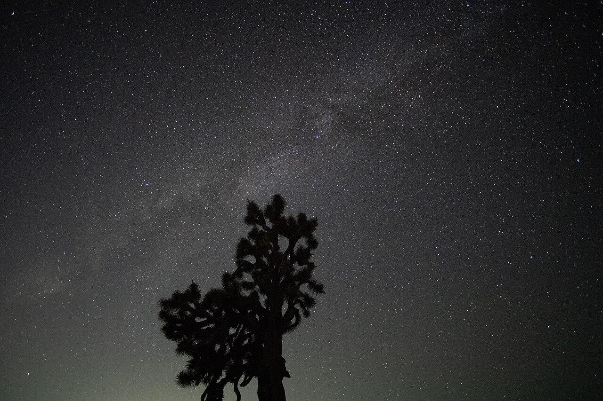

Manual de Observação Astronômica
Aprenda a explorar o céu noturno passo a passo com conselhos práticos.
1. Preparação para a Noite de Observação
Para obter a melhor experiência ao observar o céu, a preparação adequada é fundamental. A poluição luminosa das cidades é o maior obstáculo para a visualização de corpos celestes tênues.
Passos Recomendados:
- Escolha do local: Procure áreas afastadas de grandes centros urbanos, parques com pouca iluminação ou zonas rurais.
- Adaptação à escuridão: Os olhos humanos levam cerca de 20 a 30 minutos para se adaptar totalmente à penumbra. Evite olhar para a tela do celular com brilho alto.
- Iluminação vermelha: Use lanternas com filtro ou luz vermelha, pois esse comprimento de onda preserva a adaptação visão noturna.
- Verificação meteorológica: Consulte a previsão do tempo para garantir noites de céu limpo e com baixa umidade relativa.

.jpg){kind=link}
2. Escolha de Instrumentos Astronômicos
Muitos iniciantes acreditam erroneamente que é preciso comprar um telescópio gigante logo no primeiro dia. Na realidade, existe uma progressão recomendada:
- Olho Nu: Ideal para aprender as constelações principais, identificar planetas brilhantes (Vênus, Júpiter, Marte, Saturno) e acompanhar chuvas de meteoros.
- Binóculos (ex: 7x50 ou 10x50): Oferecem um amplo campo de visão, excelente portabilidade e são perfeitos para observar a Lua, aglomerados abertos e a Galáxia de Andrômeda.
- Telescópios Refratores (Lentes): Ótimos para observação planetária e lunar, oferecendo imagens nítidas com baixa manutenção.
- Telescópios Refletores (Espelhos): Maior abertura por custo benefício, ideais para objetos do céu profundo como nebulosas e galáxias remotas.
3. Principais Alvos no Céu Noturno
Dependendo da época do ano e do hemisfério, diferentes maravilhas celestes estarão em destaque no firmamento:
🌙 A Lua
Observe a linha do exterminador (divisa entre dia e noite lunar) para enxergar sombras detalhadas em crateras e montanhas.
🪐 Planetas
Júpiter e suas 4 luas galileanas principais, e Saturno com o seu inconfundível sistema de anéis.
✨ Nebulosas
A Grande Nebulosa de Órion (M42) é visível até mesmo em áreas com moderada poluição luminosa.